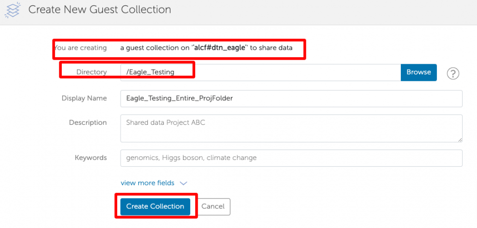
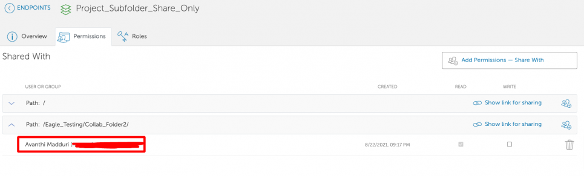
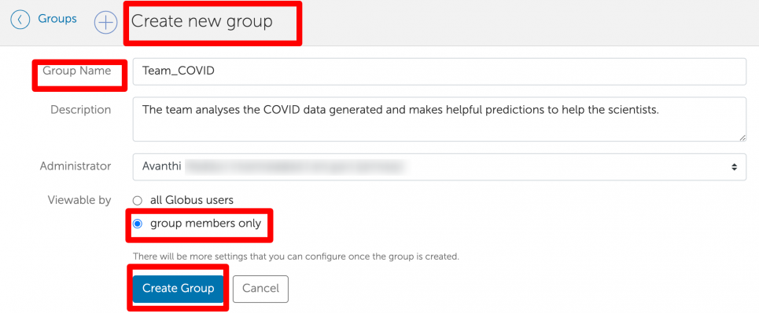
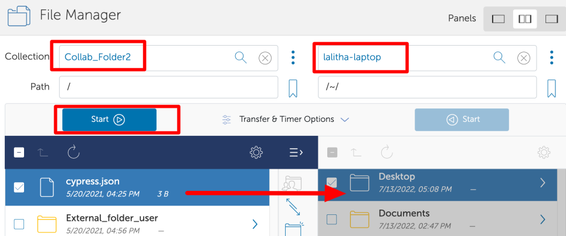
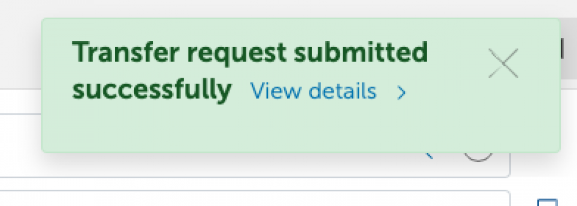
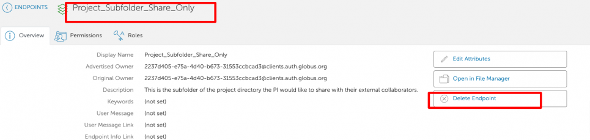
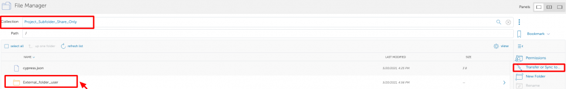
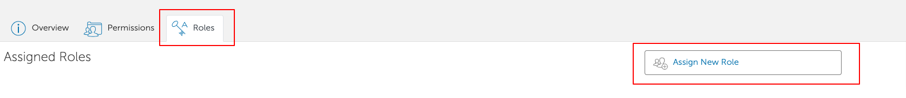

Sharing on Eagle Using Globus
Overview
Collaborators throughout the scientific community have the ability to write data to and read scientific data from the Eagle filesystem using Globus sharing capability. This capability provides PIs with a natural and convenient storage space for collaborative work.
Note: The project PI needs to have an active ALCF account to set up Globus guest collections on Eagle, and set permissions for collaborators to access data.
Globus is a service that provides research data management, including managed transfer and sharing. It makes it easy to move, sync, and share large amounts of data. Globus will manage file transfers, monitor performance, retry failures, recover from faults automatically when possible, and report the status of your data transfer. Globus supports GridFTP for bulk and high-performance file transfer, and direct HTTPS for download. The service allows the user to submit a data transfer request, and performs the transfer asynchronously in the background. For more information, see Globus data transfer and Globus data sharing.
Note: If you are migrating your data from Petrel, please see the migration instructions on the webpage == (add link) Transferring Data to Eagle==

Logging into Globus with your ALCF Login
ALCF researchers can use their ALCF Login username and password to access Globus. Go to Globus website and click on Log In in the upper right corner of the page.
Type or scroll down to "Argonne LCF" in the "Use your existing organizational login" box, and then click "Continue".
You will be taken to a familiar-looking page for ALCF login. Enter your ALCF login username and password.
Accessing your Eagle Project Directory
There are two ways for a PI to access their project directory on Eagle.
- Web Interface: By logging in to Globus interface directly and navigating to the ALCF Eagle endpoint.
Note: Specifically for PIs with Eagle 'Data-only' projects and no other compute allocations, logging in from the Globus-side to get to Eagle is the only way for them to access their Eagle project directory.

- POSIX: By logging in to the ALCF systems from the terminal window.
Note: For Eagle Data and Allocation projects, the PI will have access to the required ALCF systems (besides the Globus Web Interface) to login and access their Eagle project directory.

Creating a Guest Collection
A project PI needs to have an 'active' ALCF account in place to create and share guest collections with collaborators. Please note that ONLY a PI has the ability to create guest collections.
-
If you have an "Inactive/Deleted" ALCF account, please click on the account re-activation link to begin the re-activation process: Re-activation Link
-
If you DO NOT have an ALCF account, click on the account request link to begin the application process: Account Request Link
In the Globus application in your browser:
- There are multiple ways to Navigate to the Collections tab in "Endpoints":
- Click on link to get started. It will take you to the Collections tab for Eagle. OR
- Click on 'Endpoints' located in the left panel of the Globus web app or go to. Type "alcf#dtn_eagle" in the search box located at the top of the page and click the magnifying glass to search. Click on the Managed Public Endpoint "alcf#dtn_eagle" from the search results. Click on the Collections tab. OR
- Clicking on 'File Manager' located in the left panel of the Globus web app. Search for 'alcf#dtn_Eagle' and select it in the Collection field. Select your project directory or a sub directory that you would like to share with collaborators as a Globus guest collection. Click on 'Share' on the right side of the panel, which will take you to the Collections tab.
Note: Shared endpoints always remain active. When you select an endpoint to transfer data to/from, you may be asked to authenticate with that endpoint. Follow the instructions on screen to activate the endpoint and to authenticate. You may also have to provide Authentication/Consent for the Globus web app to manage collections on this endpoint
-
In the Collections tab, click 'Add a Guest Collection' located at the top right hand corner
-
Fill out the form:
-
If the path to the directory is not pre-populated, click the browse button, navigate and select the directory. Note that you can create a single guest collection and set permissions for folders within a guest collection. There is no reason to create multiple guest collections to share for a single project.
-
Give the collection a Display Name (choose a descriptive name)
-
-
Click "Create Collection"

Sharing Data with Collaborators Using Guest Collections
If your data is on the ALCF systems, you can easily share it with collaborators who are at ALCF or elsewhere. You have full control over which files your collaborator can access, and whether they have read-only or read-write permissions.
You can share with their institutional email. The collaborator can use the Globus web interface to download the data, or use Globus transfer to move the data to their machine.
To share data with collaborators (that either have a Globus account or an ALCF account), click on 'Endpoints', select your newly created Guest Collection (as described in the section above), and go to the 'Permissions' tab. Click on 'Add Permissions - Share With':
You can share with other Globus users or Globus Groups (for more information on Groups, scroll down to Groups). You can give the collaborators read, write or read+write permissions. Once the options have been selected, click 'Add Permission'.
PI can also choose to share their data with 'Public' with anonymous read access (and anonymous write disabled). This allows anyone that has access to the data read and/or download it without authorizing the request.
You should then see the share and the people you have shared it with. You can repeat this process for any number of collaborators. At any time, you can terminate access to the directory by clicking the trash can next to the user.

Additional information on Globus Guest Collections
-
ONLY you (a project PI) can create guest collections and make them accessible to collaborators. Project Proxy (on the POSIX side) cannot create guest collections.
-
You can only share directories, not individual files.
-
Globus allows directory trees to be shared as either read or read/write. This means that any subdirectories within that tree also have the same permissions. Globus supports setting permissions at a folder level, so there is no need to create multiple guest collections for a project. You can create a guest collection at the top level and share sub-directories with the collaborators by assigning the appropriate permissions.
-
When you create a guest collection endpoint and give access to one or more Globus users, you can select whether each person has read or read/write access. If they have write access, they can also delete files within that directory tree, so you should be careful about providing write access.
-
Globus guest collections are created and managed by project PIs. If the PI of a project changes, the new PI will have to create a new guest collection and share them with the users. Globus guest collections' ownership cannot be transferred.
-
Guest collections are active as long as the project directory is available and the PI's ALCF account is active. If the account goes inactive, the collections become inaccessible to all the users. Access is restored once the PI's account is reactivated.
-
All RW actions are performed as the PI, when using Guest Collections. If a PI does not have permissions to read or write a file or a directory, then the Globus guest collection users won't either.
Creating a group
- Go to Groups on the left panel
- Click on ‘Create a new group’ at the top
- Give the group a descriptive name and add Description for more information
- Make sure you select ‘group members only’ radio button
- Click on ‘Create Group’

Transferring data from Eagle
Log in to app.globus.org using your ALCF credentials. After authenticating, you will be taken to the Globus File Manager tab. In the 'Collection' box, type the name of Eagle managed endpoint (alcf#dtn_eagle). Navigate to the folder/file you want to transfer. HTTPS access (read-only) is enabled so you can download files by clicking the "Download" button.
Click on 'Download' to download the required file.
To transfer files to another Globus endpoint, in the "collection" search box in the RHS panel, enter the destination endpoint (which could also be your Globus Connect Personal endpoint).

To transfer files, select a file or directory on one endpoint, and click the blue 'Start' button.

If the transfer is successful, you should see the following message:

Click on 'View details' to display task detail information.

You will also receive an email when the transfer is complete.

Deleting a guest collection
To see all guest collections you have shared, go to 'Endpoints' in the left hand navigation bar, then 'Administered by You'. Select the guest collection endpoint you wish to delete, and click on 'Delete endpoint'.

What to tell your Collaborators
If you set up a shared endpoint and want your collaborator to download the data, this is what you need to tell them.
First, the collaborator needs to get a Globus account. The instructions for setting up a Globus account are as described above. This account is free. They may already have Globus access via their institution.
If the collaborator is downloading the data to his/her personal workstation, they need to install the Globus Connect client. Globus connect clients are available for Mac, Windows or Linux systems and are free.
If you clicked on the 'notify users via email' button when you added access for this user, they should have received a message that looks like this:

You can, of course, also send email to your collaborators yourself, telling them you've shared a folder with them. The collaborator should click on the link, which will require logging in with their institutional or Globus login username and password. They should then be able to see the files you shared with them. External collaborator's view of the shared collection is shown below:

They should click on the files they want to transfer, then 'Transfer or Sync to', enter their own endpoint name and desired path and click the 'Start' button near the bottom to start the transfer.
Encryption and Security
Data can be encrypted during Globus file transfers. In some cases encryption cannot be supported by an endpoint, and Globus Online will signal an error.
For more information, see How does Globus Online ensure my data is secure?
In the Transfer Files window, click on 'More options' at the bottom of the 2 panes. Check the 'encrypt transfer' checkbox in the options.

Alternatively, you can encrypt the files before transfer using any method on your local system, then transfer them using Globus, then unencrypt on the other end.
Note: Encryption and verification will slow down the data transfer.
FAQs
General FAQs:
1. What is the Eagle File system?
It is a Lustre file system residing on an HPE ClusterStor E1000 platform equipped with 100 Petabytes of usable capacity across 8480 disk drives. This ClusterStor platform also provides 160 Object Storage Targets and 40 Metadata Targets with an aggregate data transfer rate of 650GB/s. Primary use of Eagle is data sharing with the research community using Fix Link Globus.The file system is available on all ALCF compute systems. It allows sharing of data between users (ALCF and external collaborators).
2. What is the difference between Guest, Shared and a Mapped collection?
- Guest collections: A Guest collection is a logical construct that a PI sets up on their project directory in Globus that makes it accessible to collaborators. The PI creates a guest collection at or below their project and shares it with the Globus account holders.
- Shared collection: A guest collection becomes a shared collection when it is shared with a user/group.
- Mapped Collections: Mapped Collections are created by the endpoint administrators. In the case of Eagle, these are created by ALCF.
3. Who can create Guest collections?
ONLY a project PI (or project owner) can create guest collections and make them accessible to collaborators.
Project Proxy (on the POSIX side) or Access Manager (on the Globus side) do not have the ability to create guest collections.
4. Who is an Access Manager?
Access Manager is someone who can act as a Proxy on behalf of the PI to manage the collection. The Access Manager has the ability to add users, remove users, grant or revoke read/write access privileges for those users on that particular guest collection. However, Access Managers DO NOT have permissions to create guest collections.
5. What are Groups?
Groups are constructs that enable multi-user data collaboration. A PI (and an Access Manager) can create new groups, add members to them and share a guest collection with a group of collaborators.
Note Members of groups do not need to have an ALCF account.
6. What are some of the Common Errors you see and what do they mean?
- EndpointNotFound - Wrong endpoint name
- PermissionDenied - If you do not have permissions to view or modify the collection on <endpoint> (refer to the appropriate section for what this error could mean)
- ServiceUnavailable - If the service is down for maintenance
PI FAQs:
1. How can a PI request for a data-only, Eagle storage allocation?
A project PI can request an allocation by filling out the Director’s Discretionary Allocation Request form:Request an allocation. The allocations committee reviews the proposals and provides its decision in 1-2 weeks. To request a storage allocation on Eagle for an existing project, please email == Checksupport@alcf.anl.gov == with your proposal.
2. Does a PI need to have an ALCF account to create a Globus guest collection?
Yes. The PI needs to have an 'active' ALCF account in place to create and share guest collections with collaborators.
- If the PI has an 'Inactive/Deleted' ALCF account, they should click on the link here to start the account re-activation process: Account re-activation link
- If they don't have an ALCF account, they request for one: Account request link
3. What endpoint should the PI use?
alcf#dtn_eagle
4. What are the actions an Eagle PI can perform?
- Create and delete guest collections, groups
- Create, delete and share the data with ALCF users and external collaborators
- Specify someone as a Proxy (Access Manager) for the guest collections
- Transfer data between the guest collection on Eagle and other Globus endpoints/collections
5. How can a PI specify someone as a Proxy on the Globus side?
Go to alcf#dtn_eagle -> collections -> shared collection -> roles -> select 'Access Manager'


6. What is the high-level workflow for setting up a guest collection?
- PI requests an Eagle allocation project
- The ALCF Allocations Committee reviews and approves requests
- ALCF staff sets up a project, unixgroup, and project directory (on Eagle)
- A Globus sharing policy is created for the project with appropriate access controls
-
PI creates a guest collection for the project, using the Globus mapped collection for Eagle.
- Note: PI needs to have an active ALCF Account and will need to log in to Globus using their ALCF credentials.
- If PI has a Globus account, it needs to be linked to their ALCF account
-
PI adds collaborators to the guest collection. Collaborators can be ALCF users and external collaborators
- Added with Read only or Read-Write permissions
7. Should PI add their ALCF project members to Eagle separately to access guest collections?
ALCF project members already have access to the project directory that they can access by browsing the endpoint alcf#dtn_eagle. Globus guest collections allows sharing of data with collaborators that don't have ALCF accounts.
8. Who has the permissions to create a guest collection?
Only the PI has the ability to create a guest collection. The Access Manager, along with the PI, has permissions to share it with collaborators (R-only or R-W permissions as needed).
9. I am the project PI. Why do I see a "Permission Denied" error when I try to CREATE a shared collection?
If you are a PI and you see this error, it could mean that a sharing policy might not have been created by ALCF. Please contact Checksupport@alcf.anl.gov for assistance.
10. If a PI added someone as a project proxy on the POSIX-side, is it safe to assume that the Proxy can create guest collections?
No, project proxies cannot create guest collections, only the PI can.
11. Who can create groups? A PI (and an Access Manager) can create new groups, add members to them and share a guest collection with a group of collaborators. For more information, refer to: Creating a Group
12. What happens when the PI of a project changes? What happens to the shared collection endpoint?
The new PI will need to create new shared collections and share it with collaborators again.
13. I notice that I am the owner of all the files that were transferred by external collaborators using the guest collection. Why is that?
When collaborators read files from or write files to the guest collection, they do so on behalf of the PI. All writes show up as having been carried by the PI. Also, if the PI does not have permission to read or write to a file or folder in the directory, then the collaborators will not have those permissions either.
14. What happens to the guest collections when the PI's account goes inactive?
The collections will also become inactive until the PI's account is re-activated.
15. How long does it take for the endpoint to become accessible to collaborators after PI's account is activated?
Right away. The page needs to be refreshed and sometimes you may have to log out and log back in.
Access Manager FAQs:
1. What are the actions an Access Manager can perform?
1. Access Manager should be able to see the collection under "Shared with you" and "Shareable by you" tabs.
2. Has permissions to add and/or delete collaborators on the shared collection and restrict their R-W access as needed.
2. Does an Access Manager need to have an ALCF account?
Not necessary. However, if they need to manage the membership on the POSIX side, they will need an ALCF account and be a Proxy on the project.
3. What is the difference between an ALCF project Proxy and a guest collection Access Manager?
ALCF Project Proxy has permissions to manage project membership on the POSIX side whereas guest collection Access Manager has permissions to manage the project membership specific to that guest collection shared by the PI on the Globus side.
4. I am an 'Access Manager' on the collection. Why do I see a 'Permission Denied' error when I try to SHARE a guest collection created by the PI?
If you are a non-PI who is able to access the guest collection but unable to share it, it means that your role on this guest collection is limited to a "Member". If you want the ability to share folders and sub-folders from the collections that are shared with you, please talk to the PI. They will need to set your role to an "Access Manager" for the collection within Globus
5. Can an Access Manager give external collaborators access to the collections that are shared with them on Eagle?
Yes, an Access Manager will see "Permissions" tab at the top of the shared collection page and can share it with collaborators and/or a group.
6. Can an Access Manager create collections using the shared endpoint?
No. An access manager cannot create a collection, only a PI can do that. The access manager can however share folders and sub-folders from the collections that are shared with them.
7. Can an Access Manager leave a globus group or withdraw membership request for collaborators?
Yes.[Go to alcf#dtn_eagle-> Groups > group_name -> Members -> click on specific user -> Role & Status -> Set the appropriate status]
8. Can an Access Manager delete guest collections created by PI? No. Access managers cannot delete guest collections.
Guest Collection Collaborators: 1. What actions can collaborators perform? 1. Collaborators can read files from a collection * 2. Collaborators can write to a collection 3. Collaborators can delete files in a collection
If the PI has read permissions for those files on the POSIX side and the collaborator is given read permissions in Globus for the guest collection.
If the PI has write permissions for those files on the POSIX side and the collaborator is given write permissions in Globus for the guest collection.
2. I am a collaborator. Why do I see a 'Permission Denied' error when I try to ACCESS a guest collection created by the PI? If you are a non-PI and you see this error while trying to access the collection, it means that you do not have read permissions to access the quest collection. Please contact the PI for required access.